伊始之章
Table of Contents
二进制分发与源码分发
- 二进制分发：从字面意思上就很容易理解，软件包仓库开放预编译的二进制包，并供包管理器下载并部署到目标主机
源码分发：从各处拉取源码，下载编译，再部署到目标主机
看起来只是将编译步骤挪到了本地进行而已，但却给了软件包部署更多灵活性
以 Debian 作为二进制分发的例子
Debian 是 GNU/Linux 世界中采用二进制分发的优秀发行版之一，APT 则是它最流行的包管理器之一
为了从远程获取预编译的二进制包，APT 需要从三个地方读取源列表：
- /etc/apt/sources.list
- /etc/apt/sources.list.d/*.list
- /etc/apt/sources.list.d/*.source
然后访问源列表里面的 URL ，获取软件包的元数据（名称，版本，依赖信息等）。这些元数据通常被存储在 var/lib/apt/lists 。只要有元数据的协助，APT 很快就能推算出要下载的包依赖哪些其他的包，并从软件包仓库开始下载需要的一揽子软件包。这些包被缓存到 var/cache/apt/archives
Deb 包里面只会包含二进制文件，以及控制这些二进制文件该释放至何处的描述文件
假如想对这个软件包搞点个性化定制，需要自己再克隆源码，修改源码，编译和打包一条龙。 不能从官方包仓库的软件包直接衍生变体
不同的打包方式带来了 Linux 软件包生态的分裂。你从 Debian 系发行版和 RHEL 系发行版就能观察到 “血脉兼容” 的现象
以 Gentoo 作为源码分发的例子
Gentoo 似乎是另一个极端。它的包管理器叫做 Portage，它从官方的软件仓库获取的是 ebuild 文件 ，而这些文件会被缓存到 var/db/repos/gentoo 下
- 可以将 ebuild 理解为一种构建软件的脚本。它包含了一些函数和变量，用来指定软件包的元数据、依赖关系、源码地址、编译选项、安装步骤等信息
- Portage 会根据 ebuild 中的指令来下载、编译和安装软件包

https://gitweb.gentoo.org/repo/gentoo.git/tree/app-editors/neovim/neovim-9999.ebuild 是一个 ebuild 文件 试图理解其中内容可以让这个解释更生动点
获取到源码以后，Portage 开始了繁忙的编译流程：它需要读取一些编译变量，而它们在 /etc/portage/make.conf 这个配置文件里
- 其中包括全局的 USE 标志、编译选项、镜像源、许可证等
- 这些变量可以控制 Portage 的功能和性能，也可以根据用户的需求进行优化和定制
每一台 Gentoo 主机都可能有不同的编译选项，因此编译出来的产物也不一致，它们已经是一种变体了
另外，许多人喜欢 Gentoo 的原因就是可以更极致地压榨运行性能
但是频繁的编译是相当耗费时间的 后面 Gentoo 又支持了分布式编译，可以让你的其他电脑分担工作量，不过依然是饮鸠止渴
Nix之道
Nix 是 NixOS 的包管理器，它是跨平台的，可以在 Linux 平台和 Darwin 平台使用
二进制分发可以保持包的一致性，使本应正常依赖的包可以正常工作（不过需要包管理器控制版本） 源码分发可以保持包的灵活性，可以自由拓展软件功能，衍生软件变体。有什么办法可以鱼与熊掌兼得呢？
Nix 则使用一种 函数式语言 来 描述 软件包 及其 依赖关系 ， 每个软件包都被视为一个纯函数的输出 ，这个输出是 nix/store 下一个带有 哈希值 的目录 :
- nix/store 下的哈希路径是根据 软件包的表达式 描述打包的 Nix 文件 和 构建过程 参与构建的参数 来 计算 出来的
每个软件包 都有一个 唯一的 标识符 ，它由一个 哈希值 和一个 包名 组成，例如：
/nix/store/7wzgkjk6l9ng015wnx7dbzq73v4yr97g-nyancat-1.5.2
其中， \(7wzgkjk6l9ng015wnx7dbzq73v4yr97g\) 是一个 160 位的 SHA-256 哈希值，它是根据软件包的表达式和构建过程的所有输入参数计算出来的。这些输入参数包括：
- 源码或二进制文件的 URL 和哈希值
- 版本号和包名
- 依赖关系和构建工具
- 编译命令和参数
- 补丁和修改
- 元数据和测试
这些 输入参数 都会被 转换 成一个 Nix 语言的表达式 ，然后被 序列化 成一个 字符串 ，再用 SHA-256 算法 计算 出一个 哈希值
这个哈希值可以保证软件包的一致性和可复现性，因为只要输入参数不变，就会得到相同的哈希值和相同的软件包

而 哈希路径下的文件夹 存放 着 软件包的所有文件 ，包括 可执行文件 、 库文件 、 配置文件 、 文档文件 等。这些文件都存放在 nix/store 目录下，而不是在系统的其他目录下，例如 usr/bin 或 bin 等
这样每个软件包之间都是隔离的，管理也是异常方便

即使是这样，还是没有解决编译时间久的问题
于是社区提供了许多缓存构建主机，包管理器会优先从上面下载已有的构建结果
除非访问完了缓存主机列表也没找到需要的二进制缓存，才会自己拉取源码构建
如何让路径依赖的程序正常工作
一切皆是文件
Linux 沿用了 Unix 的“一切皆是文件”理念。所有的输入/输出设备，包括硬盘、终端、打印机等，都被抽象为文件
而 虚拟文件系统 VFS 是这种理念的一个重要实现。VFS 提供了一个 抽象层 ，使得用户可以使用统一的接口来访问各种不同类型的文件系统
在 Linux 中，VFS 不仅用于访问真实的文件系统（如 ext4、btrfs 等），还可以用于访问各种虚拟文件系统（procfs、sysfs 等）
当想操作它们的时候，只需要使用统一的 文件操作 API （如 open 、 read 、 write 等）。这种设计 简约且易用 ，广受赞誉
文件组织规范
我们在上面提到了 Linux 将一切抽象成文件，但是又如何组织这些文件呢？
于是有了 FHS Filesystem Hierarchy Standard 来指导统一的文件组织方式：
- /bin 基本用户指令，无需特殊权限
- /boot 引导文件
- /dev 设备文件
- /etc 系统配置
- /home 用户家目录
- /lib 基本共享库与内核模块
- /media 可移动媒体的挂载点
- /mnt 临时文件系统挂载点
- /opt 拓展或业务软件
- /run 运行时变量数据
- /root 超级用户的家目录
- /sbin 系统库
- /srv 为系统服务准备的数据
/tmp 临时文件
FHS 规范了一种单根树形的文件组织方式，让不同发行版之间的程序移植变得可行，应用程序总是能找到它们期望的库文件或可执行程序
在上一节我们提到过 Nix 会将包文件释放在一个不重复的哈希路径里，而不是诸如 /usr/bin 之类的路径，这是妥妥的放弃了 FHS 了，它该如何保证那些有路径依赖的软件顺利运行呢？ 路径依赖”是指应用程序在运行时需要访问的文件或目录的具体位置 例如，一个应用可能需要访问 /usr/lib 目录下的某个库文件，或者需要读取 /etc 目录下的配置文件 这些路径通常在应用的源代码中被硬编码，因此应用对它们有所依赖
兼容办法
NixOS 会通过以下方式确保有路径依赖的软件正常运行
- 包装脚本 （ Wrapper Script ）：NixOS 会为一些应用生成包装脚本。在执行它们的时候，包装脚本会很自然的将环境变量（比如 LD_LIBRARY_PATH ）传递进去（新进程会继承其父进程的环境），它们就能在被安排好的环境变量里找到自己的依赖库
- PATH: 用于补充可执行程序的路径，让你在任何地方都能直接输入它们的名字以调用它们
- LIBRARY_PATH: 用于在编译链接阶段查找动态链接库（*.so）和静态链接库（*.a）。这个环境变量只在 编译 链接阶段起作用，对运行时的库搜索路径有影响的是下一个环境变量
- LD_LIBRARY_PATH: 用于指定动态链接器（ld）查找可执行文件运行时所依赖的动态链接库（*.so）的路径。即用于在程序 运行 期间查找动态链接库时，指定除标准路径 /usr/lib 之外的路径
- 构建过程中的路径替换 ：Nix 能接触到构建软件这一环节，自然可以对硬编码的路径进行替换
符号链接 ：NixOS 会将常见的目录或文件链接到存储在 /nix/store 中的相应文件
因为根目录下面的组织几乎全是链接在实现，所以根目录下面文件的组织对 NixOS 来说并不是太重要
可切换的系统状态
在 NixOS 中还有一个 代 generation 的概念，将 不同的配置文件 生成的 系统状态 称之为代，这些代实际上是 链接 不同的构建结果 构成的
我们在上面就已经说过根目录的组织对 NixOS 不是非常重要，因为每次生成代（系统状态）就会新建一个根，链接不同的构建结果 也就是说，这个根是可以随时由 NixOS 根据配置重建的

在生成代以后，NixOS 会添加新的引导条目，指向不同代的根目录，这样就能引导不同的系统状态。当然也能使用命令行工具实时切换这些状态
配置是一幅描绘系统的蓝图
如果尝试修改过 NixOS 的配置文件，就会明白配置文件中书写的内容实际上是希望下次生成的系统
我们相信这是广大 NixOS 新手的基本认知
中心化的配置文件
既然是根据配置文件生成系统，肯定希望配置文件是 集中 的，而不是零零散散的 dotfiles。它最好使用 统一的 语法描述 ，而不是 XML、YAML、TOML、json 等各种格式
而 NixOS 正是使用 Nix 语言来抹平这道沟壑
Nix 文件就是使用 Nix 语言 编写的源码文件，它们可以互相导入（就像常见的脚本一样），可以将它们当作项目一样去组织
依赖计算
通常会在配置文件里自定义某个软件的选项，从而不自觉地引入了包
声明式配置 带来的好处之一就是 所有的包和依赖都是确定的 ，配置文件不再仅仅是单纯的源码，还是一个 关系图 ：

因为配置使用了 Nix 语言，打包也使用了 Nix 语言，Nix 包管理器能够全程参与计算。将 软件构建任务 抽象 成 一个结点 ，软件构建往往会有其他依赖，若干结点构成了 图 ，Nix 只需要保证这个 关系图是有向无环的
保证无环是为了让 Nix 能够有明确的构建顺序，使之能够并行构建，并且解决循环依赖的问题
在 NixOS 中需要 执行 生成命令 ，才会重新计算依赖，生成新生代（新状态）
若干个函数凝聚成一个巨大的函数
为什么 NixOS 采用函数式的设计
NixOS 在设计之初就竭力遵照函数式的设计，函数式有什么迷人的气质吗？
- NixOS 需要保证构建结果的 可复现性 ：为了实现同样的输入能有同样的输出，采用纯函数式作为设计范式可以避免构建过程被无关变量干扰或不改变环境（无副作用），保持构建结果的统一也保证了可预测性
- 完整依赖性 ：要构建一个包时，Nix 会首先检查这个函数的所有输入（即依赖项）是否都已经存在
- 如果所有的输入都存在，Nix 就会执行这个函数（即进行构建）
如果有任何一个输入不存在，Nix 就会先去构建那个输入
这就确保了每个包的构建过程都是完全独立的，只依赖于它自己的输入 这也意味着，如果我们改变了任何一个包的输入（例如更新了源代码或者更换了依赖项），Nix 就会重新构建这个包，这个包变动会让其他依赖它的包也会被重新构建 如果你的配置文件描述的依赖不完整，则无法进入下次构建
原子性升级或回滚 ：在函数式编程中，数据是不可变的。由于包管理操作从不覆盖 nix/store 中的包，而只是在不同的路径中添加新版本，因此该操作是原子性的
所以在包升级期间，不存在包有一些文件来自旧版本、一些文件来自新版本的时间窗口的情况
多版本并存 ：每个包都是纯函数的输出。即使是同一软件包，只要它们的构建过程不是完全一致的，就会存储在其自己的哈希目录中，因此可以在系统中同时存在多个版本的同一软件包
这就像在函数式编程中，我们可以引用同一个函数的不同版本
所以 NixOS 其实是一个庞大的构建系统，以用户的配置文件作为函数，Nix 包管理器则是这个函数的解释器或执行器，而函数的输出则是一个完全配置好的，可以直接使用的系统（代）
函数式的设计不只是单单体现在这个构建系统，还体现在它的打包语言 Nix 上面
Nix 语言的语法设计
Nix语言是一种纯函数式语言，其语法设计充分体现了函数式编程的特点：
- 不可变性 ：在Nix中，变量一旦被赋值，就不能更改
纯函数 ：Nix 语言中的函数是纯函数，也就是说，给定相同的输入，它们总是会产生相同的输出，并且没有副作用
为了不破坏函数的纯净，Nix 语言没有全局变量的设计
- 惰性求值 ：Nix 语言使用惰性求值，这意味着表达式在需要时才会被求值。可以降低开销
高阶函数 ：Nix 语言支持高阶函数，也就是说，函数可以接受其他函数作为参数，或者返回函数作为结果，也可以产生不同状态的闭包
如果没有接触过任何一门编程语言，可以将闭包粗略地理解为带状态的函数
每一个 Nix 文件就是一个函数
Nix 源码文件是一种以 nix 为后缀的文本文件：
{ pkgs }:
pkgs.stdenv.mkDerivation {
name = "my-package";
src = ./source;
buildInputs = [ pkgs.gcc ];
}
几乎所有的 Nix 源码文件都是这种格式：
- ; 前的是 输入
- ; 后的是 输出
整个文件是被一个大函数所包裹住的，每个 Nix 文件就是一个函数
一切皆函数
NixOS 本身就是一个超大号的函数，这个函数由它内部的若干函数驱动
纯净是我们的至高追求
整个构建系统并不是绝对纯净
前面一直在强调，NixOS 的生态系统有多函数式，好吧的确是有非常多的函数，但是这些函数似乎并不纯净 这些都要从整个函数机器的齿轮：Nix 文件说起
为了设计一个纯净的函数，应该尽量地把它设计得封闭，使之隔离外部环境。但是 Nix 并不是这样，Nix 为了编译那些 Nix 文件，依然需要访问到外部世界的东西
Nix 文件可以访问任意文件（如 ~/.config/nixpkgs/config.nix）、环境变量、Git仓库、Nix搜索路径（$NIX_PATH）中的文件、命令行参数（--arg）以及系统类型（builtins.currentSystem）
这就意味着这个函数的求值过程并不完全封闭。如果在两台不同的机器上运行相同的 Nix 表达式，可能会得到不同的结果，因为这两台机器上的环境变量或文件系统可能是不同的。所以 建议尽量避开任何带有路径依赖的写法
但是这样做并不能完全解决问题，因为 Nix 文件本身就是一个路径依赖（当使用 import 函数来引入其他 Nix 文件时，必须指定一个相对或绝对路径） 这就导致了一个问题：如果想把你的 Nix 项目分享给别人，必须保证他们能够找到你引用的所有文件 这就需要你把所有相关的文件都打包成一个压缩文件或者上传到一个 Git 仓库，并且告诉别人如何正确地使用它们
这显然是很麻烦的，而且也违背了函数式编程的原则。 我们希望能够用一种更简单和优雅的方式来管理和共享我们的 Nix 项目，而不需要关心它们所依赖的具体路径
漏掉了什么细节
在前面的章节中，我们还一直试图给阅读者灌输 “NixOS” 只要靠配置文件就能复现系统的理念？ 但是事实果真是这样吗，让我们回溯一下：不变的函数之所以能有不变的输出，是因为有不变的输入
但是输入果真是一成不变的吗？
我们以最大的输入 pkgs 举例，这个输入指代的是 Nix 包管理器的软件仓库 Nixpkgs，里面有数不尽的包（Nixpkgs 是事实上最大的单体包仓库）日日夜夜在提交与修改，导致 nixpkgs 一直处于 unstable 状态 与之俱来的是 options 也经常变动，这意味着你的配置文件可能对旧版包是生效的，但是新版包的 options 变动了，现在又无效了 那有要如何解决这个由依赖版本与配置不匹配的问题呢？
答案是现在很多语言的包管理（比如 Cargo，pnpm）都采用的 版本锁定 。本网站的就是被 pnpm 管理着依赖，访问本站源代码仓库，根目录下有个叫做 pnpm-lock.yaml 的文件，里面 描述 了 各依赖互相兼容的版本 。每次更新依赖时， 包管理器会在尽可能让依赖版本比较新的条件下保持最大兼容 ，并更新 Lock 文件。于是我们就有了下面的需求：
- 尽量排除 Nix 文件互相引用时对本地文件系统路径的依赖
- 控制输入的版本，从而达到输出的可预期性
- 将 Nix 项目组织成一种易管理的形式
因此 Flakes 诞生了
终极解决方案 Flakes
Flakes 是 Nix 2.4 版本引入的一个新特性，它可以让你用一种声明式和纯净的方式来定义和使用 Nix 项目
Flakes 使用了一种 Flake 引用 的方式来 代替 文件系统路径 ， URL 等。Flake 引用大致就是下面的用法：
类 URL 句法，例如 github:NixOS/nixpkgs 表示 Github 托管平台上一个叫做 NixOS 用户的 nixpkgs 仓库
这与裸 URL 不同，要是哪天 Github 域名搬家了，也不用你批量替换 URL，只需要等 Nix 更新 Flakes 引用的解析规则就成
类路径句法，比如 /absolute/path/to/the/Flakes 和 ./relative/path/to/the/Flakes ， “类”在这种引用既可能指向一个 本地文件系统路径 ，也可能指向一个 本地 Git 仓库
如果你的 URL 指向一个本地的 Git 仓库，它就会在 flake.lock 里面记录当前仓库的 commit hash，这就保证了输入的版本是不变的 那你又问，万一我要引入的目录没有版本控制呢？那我只能说你自己人工去保证输入的这个目录的内容是不变的吧
为了保证输入的可获取性，一般用网络上的仓库作为输入，因为只要有网络，就能获得相同的输入。而使用本地文件系统路径作为输入则不然，我们很难保证每台主机的相应文件系统路径下都有一样的文件
因此，我们的建议是更多地依赖网络上的输入，除非你有一些隐私信息，才有必要使用本地文件系统输入
{
description = "A simple Flakes";
inputs.nixpkgs.url = "github:NixOS/nixpkgs/nixos-unstable";
outputs = { self, nixpkgs }: {
packages.x86_64-linux.hello =
with nixpkgs.legacyPackages.x86_64-linux;
stdenv.mkDerivation {
name = "hello";
src = hello.src;
buildInputs = [ gcc ];
installPhase = ''
mkdir -p $out/bin
echo "Hello, world!" > $out/bin/hello
chmod +x $out/bin/hello
'';
};
};
钉住版本
当在 Flakes.nix 文件中 指定 了一个 Flakes引用 （例如github:NixOS/nixpkgs/nixos-unstable）后，Nix会在第一次运行 nix build 或其他 Nix 命令时会 生成 一个 flake.lock 文件。这个文件会记录下所有输入 Flakes 的具体版本（例如，Git 提交哈希）
有了版本锁，你什么时候构建，都是会根据 flake.lock 文件来确认依赖版本，使得构建结果也与之前并无二致
如果想更新到最新的提交，可以运行 nix flake update 命令。这个命令会去更新输入，并重新钉住最新输入的版本
| Next: Nix语言 | Previous: 安装教程 | Home: NixOS 入门 |